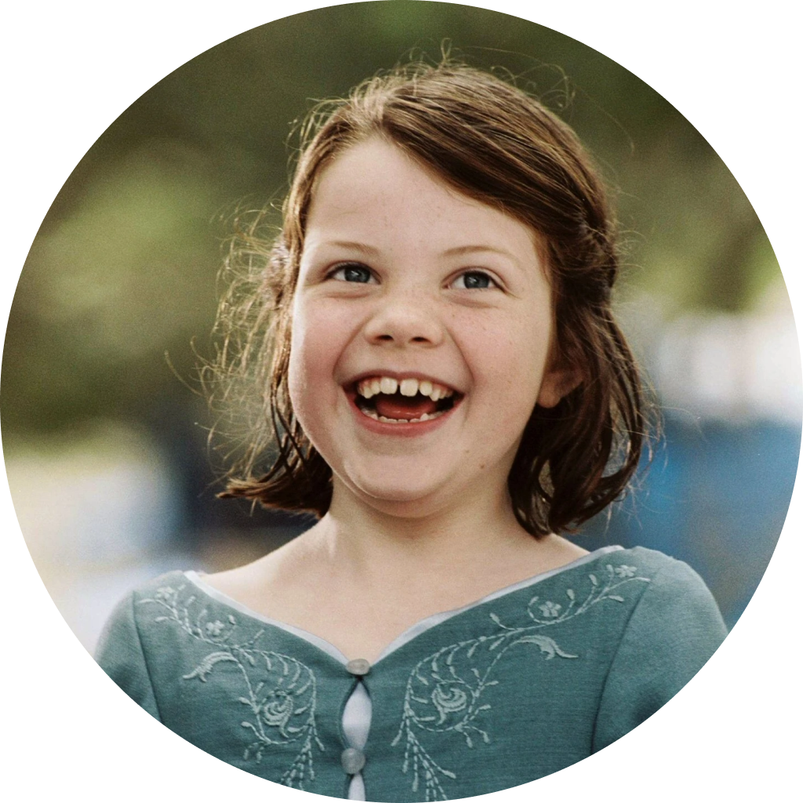
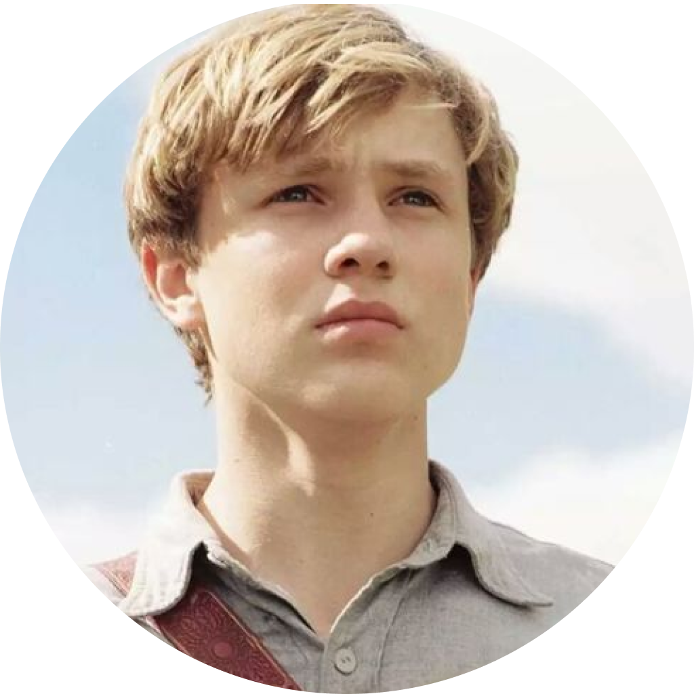
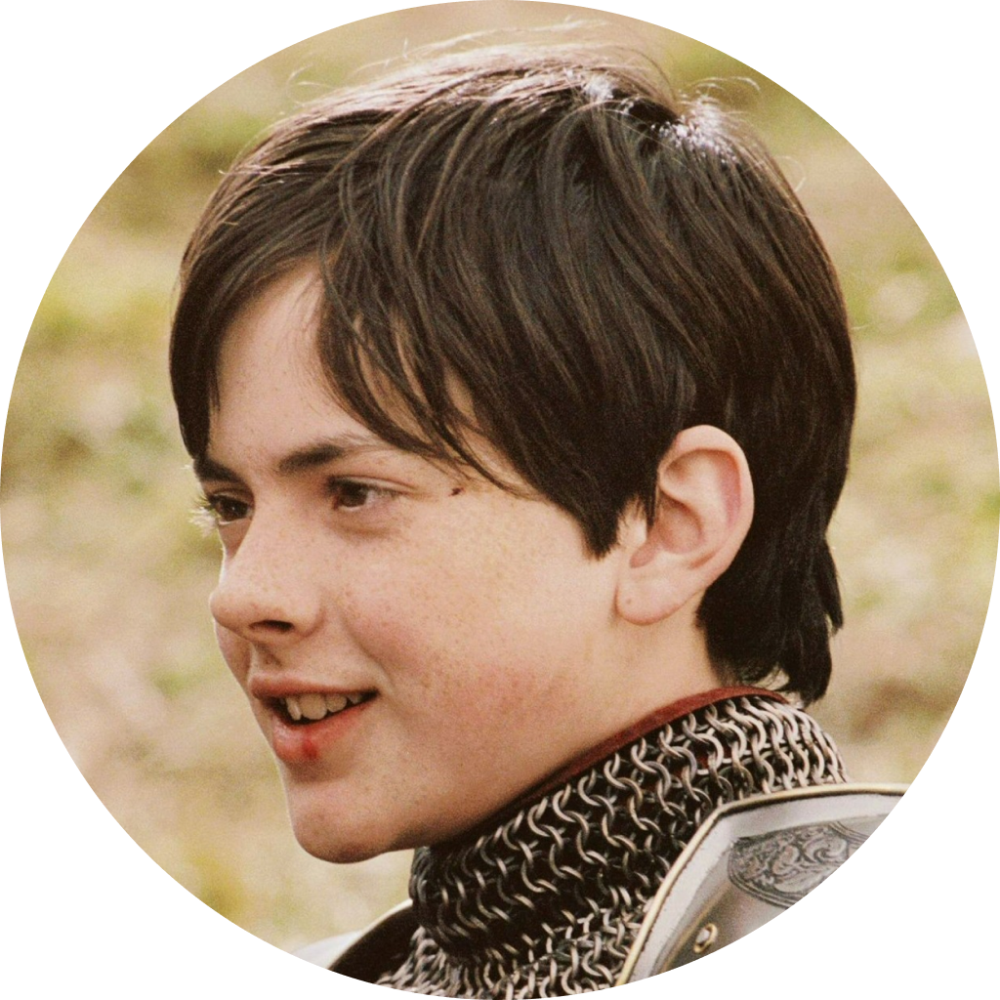
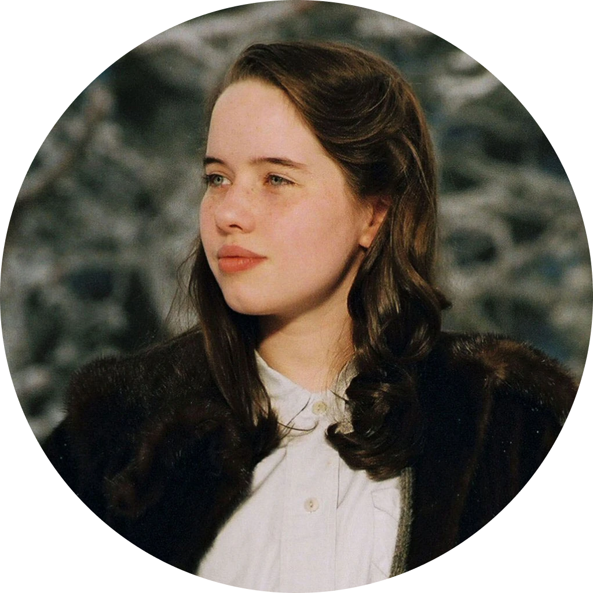

AS CRÔNICAS DE NÁRNIA
"Estou do lado de Aslam, mesmo que não haja Aslam. Quero viver como um Narniano, mesmo que Nárnia não exista."

Soluço é um adolescente viking da ilha de Berk, onde lutar contra dragões é um meio de vida. Suas opiniões avançadas e um senso de humor estranho o tornam um desajustado, apesar de seu pai ser o chefe do clã. Jogado em uma escola de combate a dragões, ele quer provar que é um verdadeiro viking, mas ao fazer amizade com um dragão que derrubou, machucou e estava prestes a matar, ele tem a chance de mudar o futuro de seu povo. Após construir uma relação com o temido dragão fúria da noite Banguela, soluço mostra a todos de sua vila que matar dragões só trará mais guerra e impede um verdadeiro massacre contra os dragões. Soluço perde uma de suas pernas, pois a perdeu durante a luta contra um dragão imenso, o Morte Rubra, para evitar que ele machuque os humanos. Ao voltar para casa, ele vê que suas palavras foram ouvidas e agora os humanos e os dragões vivem em harmonia.
Depois de alguns anos em paz com os dragões, uma ameaça surge para os dragões, Drago Sangue Bravo, um caçador de dragões que teve um de seus brações decepados pelas criaturas no passado. Soluço parte em busca de Drago para fazer com que ele mude sua mente, após ficar atordoado com a notícia de que seu pai deseja que ele assuma o trono da vila de Berk. Em sua busca, Soluço encontra sua mãe, Valka, quem ele achava que havia morrido e aprende com ela inúmeras lições a respeito dos dragões incluindo sobre o rei dessas criaturas. Ao falhar na missão de convencer Drago a voltar atrás, todos se preparam para a guerra. Soluço e seus companheiros são derrotados, provocando a morte de seu pai e assim, a ascenção do menino ao trono. Apesar de abalados com as situações passadas, Valka, Soluço e seus amigos preparam outra ofensiva contra Drago, vencem a batalha e Banguela se torna o Alfa dos dragões.
Outra vez em paz, o mundo fica mais perigoso, o dizimador de dragões, Grimmel, deseja matar banguela, o último espécie dos dragões fúria da noite usando como isca uma fêmea da espécia fúria da luz. Banguela e a fúria da luz criam uma relação e Soluço deixa o dragão livre para ir se encontrar com a fêmea. Banguela e fúria da luz são capturados por Grimmel e Soluço juntamente com os cavaleiros de dragões partem para salvá-los. Em meio a uma luta brutal Grimmel morre e faz soluço caír de uma altura gigantesca, porém o garoto é salvo pela fúria da luz. Com tudo em ordem, Soluço percebe que o único modo que os dragões poderão viver em paz, é ficando longe dos humanos, se separando assim de banguela,assim como tods os cavaleiros de seus dragões. Após se casar com Astrid, com quem havia construído uma grande relação, e agora com dois filhos Soluço parte em uma jornada para encontrar o amigo dragão que construiu uma família com a fúria da luz e apresentá-lo ás crianças para que elas conheçam quem os dragões realmente são e foram no passado.
|  |
Lúcia PevensieSoluço Haddock III é o principal protagonista da franquia Como Treinar o Seu Dragão. Ele é o filho de Valka e o falecido chefe Hooligan, Stoico o Vasto , tornando-o herdeiro e, mais tarde, o atual chefe da tribo. |
|  |
Pedro PevensieBanquela é o dragão Alfa protagonista da franquia Como Treinar o Seu Drado. Ele é o dragão e melhor amigo de Soluço Haddock III. |
|  |
Edmundo PevensieAstrid Hofferson, também conhecida somente pelo seu primeiro nome, Astrid, é uma viking bastante habilidosa que desde cedo aprendeu e treinou para ser uma excelente Caçadora de Dragões, sobressaindo-se sobre os outros alunos. |
|  |
Susana PevensieValka é a mãe de Soluço e esposa do falecido ex-chefe de Berk, Stoico, o Imenso. Uma exímia treinadora de dragões que possui vastos conhecimentos a respeito dessas criaturas. |
AslanSoluço Haddock III é o principal protagonista da franquia Como Treinar o Seu Dragão. Ele é o filho de Valka e o falecido chefe Hooligan, Stoico o Vasto , tornando-o herdeiro e, mais tarde, o atual chefe da tribo. |